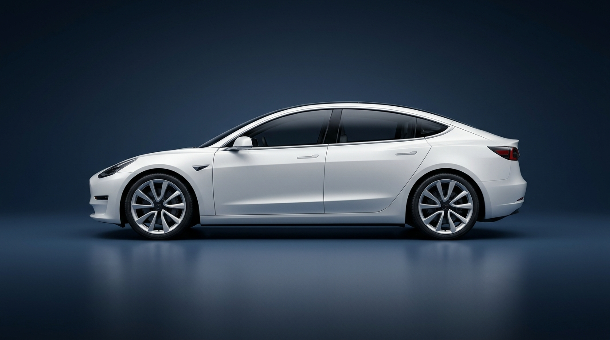

EXTERIOR WINDSHIELD
앞유리 바깥쪽 · 물기 결로
와이퍼 1회 작동 · 유리 냉기 차단
INTERIOR WINDSHIELD
앞유리 안쪽 · 실내 김서림
전면 제습 송풍 · 외기 유입 전환
SIDE MIRROR OPTICS
사이드미러 · 김서림 감지
좌·우 사이드미러 열선 즉시 가동
REAR GLASS THERMAL
뒷유리 · 김서림·서리 감지
후면 유리 열선(REAR) 자동 가동
CLEARVIEW // PLEOS OPTICAL CARE SYSTEM
앞유리(안·밖) · 사이드미러 · 뒷유리에 김서림이 감지되었습니다
전면 제습 송풍 + 와이퍼 1회 작동 + 사이드미러·뒷유리 열선을 동시에 가동합니다
시야 복구 적용